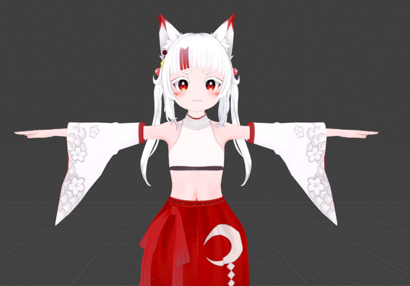

3D 캐릭터 제작
사용자의 요구에 맞는 3D 버추얼 캐릭터를 제작합니다.
나만의 버추얼 캐릭터를 만들고 실시간으로 만나보세요.
Virtual Character Studio는 사용자가 원하는 버추얼 캐릭터를 제작하고 실시간 콘텐츠에서 활용할 수 있도록 도와주는 서비스입니다.

사용자의 요구에 맞는 3D 버추얼 캐릭터를 제작합니다.
얼굴의 움직임과 표정을 버추얼 캐릭터에 실시간으로 적용할 수 있습니다.
완성된 캐릭터를 버추얼 방송과 다양한 실시간 콘텐츠에서 활용할 수 있습니다.
Blender를 활용해 모델링, 리깅과 표정 설정을 진행합니다.
ARKit 기반 표정 추적을 통해 눈과 입의 움직임을 실시간으로 표현합니다.
완성된 캐릭터를 Warudo와 OBS 등의 프로그램에서 활용할 수 있습니다.
9주차 개선: 조건부 요청사항 · 실시간 검증 · 제출 중 상태 · 실패 후 재시도
수업 과제용 시연 기능입니다. 실제 신청이 접수되거나 서버로 전송되지는 않습니다.
1 / 5 · 시작
이름을 적고 캐릭터 활용 목적을 선택한 뒤, 신청 내용을 확인할 수 있습니다.
0 / 20자
이름을 2글자 이상 입력해 주세요.
캐릭터 이름 미리보기: 미입력
표정, 의상, 방송 연동 등 원하는 작업을 구체적으로 적어주세요.
0 / 150자
8자 이상 작성해 주세요.
내용을 확인하고 수정할 사항이 있으면 이전 단계로 돌아가세요.
WEEK 10 · HISTORY NAVIGATION
완료한 캐릭터 신청 체험을 찾아보고, 상세 정보를 다시 열거나 취소할 수 있습니다.
브라우저에만 저장되는 과제용 시연 기록입니다. 실제 신청 및 취소는 처리되지 않습니다.
신청 체험을 완료하면 이곳에 내역이 표시됩니다.
저장된 신청 내역이 없습니다. 먼저 제작 신청을 체험해 보세요.